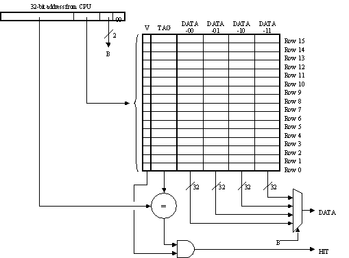
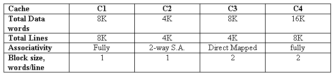

Caches
Problem 1.

The diagram above illustrates a blocked, direct-mapped cache for a
computer that uses 32-bit data words and 32-bit byte addresses.
-
 What is the maximum number words of data from main memory that can be
stored in the cache at any one time?
What is the maximum number words of data from main memory that can be
stored in the cache at any one time?
-
How many bits of the address are used to select which line of the
cache is accessed?
-
How many bits wide is the tag field?
-
Briefly explain the purpose of the one-bit V field associated with each cache line.
-
Assume that memory location 0x2045C was present in the cache. Using
the row and column labels from the figure, in what cache location(s)
could we find the data from that memory location? What would the
value(s) of the tag field(s) have to be for the cache row(s) in which
the data appears?
-
Can data from locations 0x12368 and 0x322FF8 be present in the cache
at the same time? What about data from locations 0x2536038 and
0x1034? Explain.
-
When an access causes a cache miss, how many words need to be fetched
from memory to fill the appropriate cache location(s) and satisfy the
request?
Problem 2.
The following four cache designs C1 through C4, are proposed for the
Beta. All use LRU replacement where applicable (e.g. within each set
of a set associative cache).

-
Which cache would you expect to take the most chip area (hence cost) ?
-
Which cache is likely to perform worst in a benchmark involving
repeated cycling through an array of 6K integers ? Explain.
-
It is observed that one of the caches performs very poorly in a
particular benchmark which repeatedly copies one 1000-word array to
another. Moving one of the arrays seems to cure the problem. Which
cache is most likely to exhibit this behavior ? Explain.
-
Recall that we say cache A dominates cache B if for every input
pattern, A caches every location cached by B. Identify every pair (A,
B) of caches from the above list where A dominates B. Explain your
reasoning.
Problem 3.
The data-sheet for a particular byte-addressable 32-bit microprocessor
reads as follows:
The CPU produces a 32-bit virtual address for both data and
instruction fetches. There are two caches: one is used when fetching
instructions; the other is used for data accesses. Both caches are
virtually addressed. The instruction cache is two-way set-associative
with a total of 2
12 bytes of data storage, with 32-byte blocks. The
data cache is two-way set-associative with a total of 2
13 bytes of
data storage, with 32-byte blocks
-
How many bits long is the tag field in each line of the
instruction cache?
-
How many address bits are used to choose which line is accessed
in the data cache?
-
Which of the following instruction addresses would never
collide in the instruction cache with an instruction stored at
location 0x0ACE6004?
(A) 0x0BAD6004 (D) 0x0ACE6838
(B) 0x0C81C81C (E) 0xFACE6004
(C) 0x00000004 (F) 0x0CEDE008
-
What is the number of instructions in the largest instruction
loop that could be executed with a 100% instruction cache hit rate
during all but the first time through the loop?
Problem 4.
The following questions ask you to evaluate alternative cache
designs using patterns of memory references taken from running
programs.
Each of the caches under consideration has a total capacity
of 8 (4-byte) words, with one word stored in each cache line. The
cache designs under consideration are:
DM: a direct-mapped cache.
S2: a 2-way set-associative cache with a least-recently-used
replacement policy.
FA: a fully-associative cache with a least-recently-used
replacement policy.
The questions below present a sequence of addresses for memory
reads.
You should assume the sequences repeat from the start whenever
you see "...". Keep in mind that byte addressing is used; addresses
of consecutive words in memory differ by 4. Each question asks which
cache(s) give the best hit rate for the sequence. Answer by
considering the steady-state hit rate, i.e., the percentage of memory
references that hit in the cache after the sequence has been repeated
many times.
-
Which cache(s) have the best hit rate for the
sequence 0, 16, 4, 36, ...
-
Which cache(s) have the best hit rate for the sequence 0, 4, 8,
12, 16, 20, 24, 28, 32, ...
-
Which cache(s) have the best hit rate for the sequence 0, 4, 8,
12, 16, 20, 24, 28, 32, 28, 24, 20, 16, 12, 8, 4, ...
-
Which cache(s) have the best hit rate for the sequence 0, 4, 8,
12, 32, 36, 40, 44, 16, ..
-
Assume that a cache access takes 1 cycle and a memory access
takes 4 cycles. If a memory access is initiated only after the cache has
missed, what is the maximum miss rate we can tolerate before use of
the cache actually slows down accesses?
Problem 5.
Ben Bitdiddle has been exploring various cache designs for use with
the Beta processor. He is considering only caches with one word (4
bytes) per line. He is interested in the following cache designs:
C1: 2-way set associative, LRU replacement, 256 total data words (128
sets of 2 words each).
C2: 2-way set associative, random replacement, 256 total data words
(128 sets of 2 words each).
C3: 2-way set associative, LRU replacement, 512 total data words
(256 sets of 2 words each).
C4: 4-way set associative, LRU replacement, 512 total data words
(128 sets of 4 words each).
C5: Fully associative, LRU replacement, 512 total data words.
In order to help her analysis, Ben is trying to identify cases
where one cache dominates another in terms of cache hits. Ben
considers that cache A dominates cache B if, given identical strings
of memory references, every memory reference that gives a cache hit
using B is also a hit using A. Thus if A dominates B, A will give at
least as high a hit rate as B for every program.
In each of the following pairs of caches, deduce whether the first
dominates the second:
-
Averaged over a wide range of typical application programs,
which of the above caches would you expect to yield the highest hit
rate?
Problem 6.
Adverbs Unlimited is considering a computer system based loosely on
the Beta. Five designs have been proposed, each of them similar to
the Beta except for a cache between the 32-bit processor data bus and
the main-memory subsystem. Like the Beta, each machine deals with
32-bit main-memory addresses, for a total address space of 2
32
bytes. The machines' caches differ only in the parameters of
associativity, size, and writeback. The block size for each cache
1 word (4 bytes).
| Model | Associativity | Total data size (bytes) | Write- |
|---|
| DEFINATELY | four-way | 216 | back |
| CERTAINLY | direct-mapped | 216 | back |
| HOPEFULLY | 4-way | 210 | through |
| PERHAPS | 2-way | 210 | back |
| DOUBTFULLY | direct-mapped | 210 | back |
-
How many bits are required for the tag portion of each
cache line for each of the architectures? How bits of comparitor are needed?
How many bits of SRAM altogether (including tag fields, valid and dirty bits).
-
Address lines from the CPU are designated A31, ..., A1, A0,
where A0 is the low-order address bit. Which of these CPU address
lines are used as address inputs to the SRAMs of the cache in the
PERHAPS model?
-
Suppose that address lines A2 and A9 were inadvertently
interchanged in the cable between the DOUBTFULLY CPU and its cache.
Which, if any, of the following statements best describes the
effect(s) of this change, assuming that other hardware and software
remain unmodified?
- The machine would no longer work.
- The machine would continue to work as before.
- The machine would continue to work, but at a reduced performance level.
- The machine would continue to work, at an improved performance level.